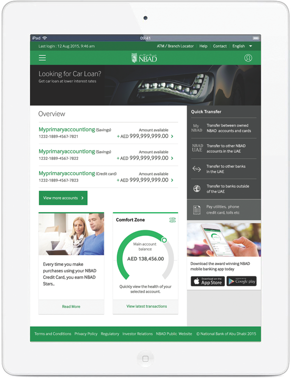

At a glance
More people were banking online
Publicly reported NBAD historical data. These are not project KPIs and were not collected by me — they establish the scale of the channel the redesign served. Registered users roughly doubled between 2009 and 2015 (94,081 → 195,414). Source: NBAD Corporate Sustainability Report 2015.
Part of a bigger change
NBAD's 2015 customer feedback identified online banking access and clarity of product/service information as areas for improvement. The bank reported responding by upgrading branches, the website, online banking, mobile banking and ATMs. None of the context below was my work — it is the environment the work sat in.
The same Adobe material describes analytics used to understand navigation, popular, difficult and rarely used services, alongside responsive, multilingual and personalised experiences. I did not implement analytics, targeting or personalisation.
Lots of products, one bank
Accounts, cards, loans, deposits, funds, eServices, transfers and bill payments arrived in separate iterations. Without a system, each sprint would invent its own UI.
Moving money and changing credentials are high-stakes, information-heavy tasks. Simplifying them could not mean hiding what customers need to verify.
Everything was built on Backbase, inside a shared page shell, against a live FSD. Designs had to be buildable, specifiable and repeatable.
What I did
Why people log in
Reconstructed UX context based on the project scope and historical banking context. The original personas are unavailable; this is not client research and contains no participant data.
Check balances · review transactions · manage cards · keep personal details current
Manage beneficiaries · domestic and international transfers · find past transfers
Understand credit cards, loans, deposits and mutual funds at a glance
Alerts · secure messages · utility payments · eService requests
How it was organised
Grouped from the modules I designed. Not the exact original NBAD IA — the delivered side navigation (Accounts, Cards, Deposits, Loans, Mutual Funds, Transfers, Payments, Beneficiary, Online Services) is visible in the screens that follow.
Design the list row, the detail header, the stepper — then compose screens from them.
Every product leads with the one number the customer came for; everything else is secondary.
A consistent preview + OTP step before any commitment, and an unambiguous confirmation after.
Accordions, tabs and expandable rows keep dense data available without showing it all at once.
Style guide first
Before the first sprint's screens, I defined the Internet Banking style guide: master-page elements (header, sidebar, footer), type, tabs, accordions, popups, tooltips and form controls — each annotated with size, face and colour so developers could build it without a redline per screen.
The palette was structured by customer segment: a green family for Personal & Business, a slate family for Private, a gold family for Elite, sharing one universal neutral ramp.
Three customer themes
Because layout, components and hierarchy were shared, a segment theme only had to change colour and imagery. The Elite and Private palettes from the style guide sit on the exact same structure — overview, Comfort Zone, quick transfer, offers — with a quieter, more premium wrapper.
How each sprint ran
Every iteration opened in a room with stakeholders, business analysts and me. Requirements became FSD sections, FSD sections became screens, screens went back to the same room.
Six iterations
Everyday banking
Account Details, Transactions, Profile Management, Debit Card Management and Alerts. Five modules, one skeleton: shared header, left navigation, a titled content panel, and a list row that pairs a product identity with its balance. These became the parts every later sprint was built from.
Cards, loans, deposits and funds
A credit card has a limit and a due date; a loan has an outstanding principal; a deposit has a maturity; a fund has units and NAV. The data differs — the anatomy doesn't. Each product reuses the Iteration 1 list row and detail header, swapping only the key figures.
eServices
eServices turned read-only product pages into places you could act: request a cheque book or demand draft, open or close a fixed deposit, top up or defer a loan, reissue a card, change a limit. Rather than design a dozen bespoke forms, the requests shared one request → preview & OTP → success sequence.
Logging in
Login, Forgot Password and New User Registration are three separate journeys through the same concerns — form hierarchy, inline validation, error recovery, security reassurance and a clear finish. They were broken into short numbered steps, each asking for one kind of information.
Moving money
Sending money is risky and full of detail. The job was to make it feel simple without hiding anything.
My framing of the problem, not a research finding.
Iteration 5 covered Beneficiary Management, transfers to own and other NBAD accounts, domestic transfers within the UAE, international transfers, Transfer Search and Transfer History. Each type has different fields — IBAN, SWIFT, currency, charges — but every one runs through the same three-step spine.
A closer look
Paying bills
Paying a utility, telecom or toll provider is a transfer with a different first step. Provider selection was the only genuinely new pattern; details, preview & OTP and confirmation were inherited directly from Iteration 5.
Tools for bank staff
The programme extended to internal tools — Bank User Management, Customer Management, Reports and an admin Message Center. Same shell and components; different priorities.
Messages
Secure messaging appears twice: in the customer's Internet Banking (Iteration 2) and in the bank's admin tools. Designing both sides together kept message states and structure aligned.
Mobile and tablet
Internet Banking would increasingly be opened on phones, so I wrote the responsive guidelines mobile-first and designed the key screens at each size. On tablet the quick-transfer rail moves beside the overview; on mobile everything becomes one column ranked by what customers check first — balances, then quick transfer, then Comfort Zone and offers. Tables fold into stacked rows and actions go full-width.

Not every module was redesigned for mobile; the guidelines and key screens set the rules for the rest.
Components
Brand, neutral and button values from the original style guide. Status tints for warning/error/info are portfolio approximations.
Built on Backbase
NBAD's Internet Banking was developed on Backbase. I designed on the client site alongside the development teams building it.
Public material describes the programme as a shift to customer-centric, multi-channel Internet Banking, with requirements spanning scalability, security, Arabic support, responsive UX, integration, analytics and regulation. Backbase case study
In practice that meant designing modules that sit in one shared page shell, and components specified precisely enough to be built once and reused.
Outcome
Reported by NBAD for the bank as a whole — not attributable to this design work.
What I took away
Being in the requirements room meant edge cases arrived as design input, not as late bugs.
The style guide felt slow in February. By Iteration 6, whole journeys assembled from existing parts.
In banking, an unfamiliar layout at the payment step reads as risk. Predictability is part of security UX.
Today I'd push to agree success measures up front, so the design outcome could be evidenced, not just described.
Good banking design is mostly invisible: one language, applied patiently, until thirty journeys feel like one.
NBAD Internet Banking · Backbase · 2015 · UX/UI & Visual Design